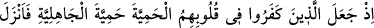
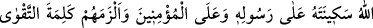
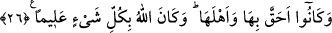

26. O zaman inkâr edenler, kalplerine taassubu, cahiliye taassubunu
yerleştirmişlerdi. Allah da elçisine ve müminlere sükûnet ve güvenini indirdi,
onların takvâ sözünü tutmalarını sağladı. Zaten onlar buna lâyık ve ehil kimselerdi.
Allah her şeyi bilendir.
“Kâfirlerin kalplerine cahiliyye hamiyyetini aldıkları zamanı hatırla” demektir.
Burada Mekke ehli kasdedilmektedir.
Müfredât’ta der ki: Gadaba dayalı kuvvete, meydana çıkıp arttığı zaman “hamiyyet”
denir. Çünkü gadabda kalbin harareti, dolayısıyla kanın kaynaması söz konusudur.
Cahiliye hamiyetini kalplerine iyice yerleştirdiler, anlamına gelir. Cahiliyye hamiyyeti;
ya bi’setten önceki câhil milletin hamiyyetiydi ya da hakikati sağduyuyla kabul etmekten
alıkoyan bi’setten sonraki hamiyyettir.
Zührî der ki: hamiyyetleri onları Nebiyy-i Ekrem’in risaletini kabule yanaştırmadı.
“Bismillahirrahmanirrahim” ile başlanmasını kabul ettirmedi. Veya onların câhilî
hamiyetleri müslümanların Mekke’ye girmesine mâni oldu.
Mukâtil der ki: Mekke ehli şöyle dedi: “Çocuklarımızı ve kardeşlerimizi öldürdüler,
daha sonra da Mekke’ye girecekler. Araplar ne der? Onların bize rağmen, Lât ve
Uzzâ’ya rağmen bizim diyarımıza girdiklerini söylemezler mi? Kesinlikle giremezler.”
Kalplerine giren câhiliye hamiyyeti işte buydu.
Sekînet inişini ifâde eden âyet-i kerîmeyle, Allah’ın tevfikıyla Rasûlullah (s.a.) ve
mü’minlerin sergiledikleri tavrın güzelliği, buna karşılık kâfirlerin sergiledikleri tavrın
çirkinliği hatırlatılmış oluyor. Allah Rasûlullah ve mü’minlere sebât verdi, vakar
giydirdi, kâfirlerin tavrını onlara vermedi. Zaten bu sâyede onlarla sulh yaptılar,
anlaşmanın onların istediği şekilde yazılmasına razı oldular.
Şöyle rivâyet edilir: Süheyl ve arkadaşları, sulh metninin başına besmele yazılmasına
ve “bu antlaşma Rasûlullah ile Mekkeli falanca arasında” şeklinde yazılmasına karşı
çıktıkları zaman dediler ki: “– Bismikellahümme ve bu antlaşma Muhammed ibni
Abdillah ile Mekke ehli arasında” şeklinde yaz diye Ali (r.a.)’den istediler.
Efendimiz (s.a.), Hz. Ali (r.a.)’ye buyurdu ki: – Nasıl istiyorlarsa öyle yaz.
Bunun üzerine mü’minler, onları parçalayıvermek istediler. Fakat Allah onların
üzerine sekînesini indirdi de, vakar halini aldılar, yumuşadılar. Şu kadar var ki, sulh,
onlar için başta, hiçbir şekilde kabul edilemeyecek durumdu. Nitekim bu olay bu
sûrenin başında tafsîlâtlı bir şekilde anlatılmıştı.
Onları kelime-i şehâdette sâbit kadem kıldı ve onlar da bunu söylediler. Bu,
sevilmeyen bir şeye değil de kerem ve lütuf zorlamasıdır. Kelime-i şehâdetin “takvâ”